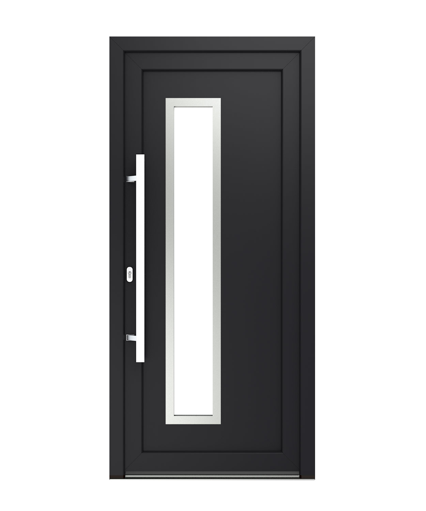

Haustür 3D Konfigurator
Florida (L/R) · Inox
Montana 2 L/R · Inox
Montana 3 L/R · Inox
Ohio · Inox
Colorado · Inox
Alaska 2 · Inox
Alaska 1 · Inox
Montana 1 · Inox
Nebraska (L/C/R) · Inox
Pennsylvania 1 · Inox
Texas (Mittig) · Inox
Texas (L/R) · Inox
Pennsylvania 2 L/R · Inox
Pennsylvania 3 L/R · Inox
Referenz — Drutex Original
Colorado

← Zurück
Weiter →
Anthrazitgrau
Ansicht
Außen
Innen
Weißtöne
Grautöne & Schwarz
Farben
Holzdekore
Verglasung